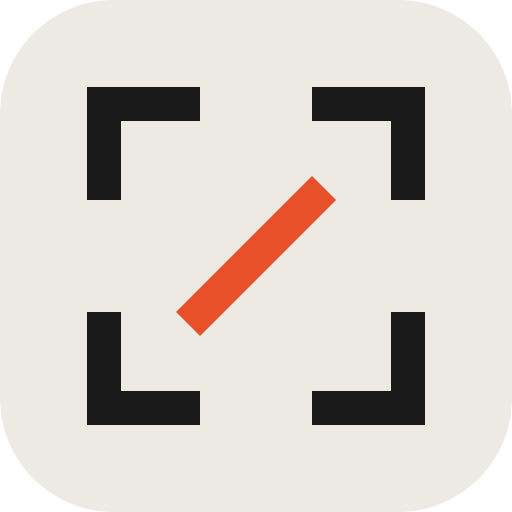

01Brackets S
The S is two more corner brackets. Same shape, same weight, same arm. Six identical pieces make the whole icon.
02Brackets S wide
The same two brackets with longer bars and shorter returns, so the letter fills more of the frame.
03Brackets S turned
The same two brackets rotated 45 degrees. Still the frame's parts, now reading as a shutter.
04Two diagonals
No letter. Two parallel slashes, the most abstract thing that still feels deliberate.
05One diagonal

A single cut through the frame. Watch that it does not read as a prohibition sign.
06Spine
Bar, diagonal, bar. The most letter-like of the stylised set, though it leans toward a Z.
07Square S
Reference. Last round's pick, the full five stroke letter.